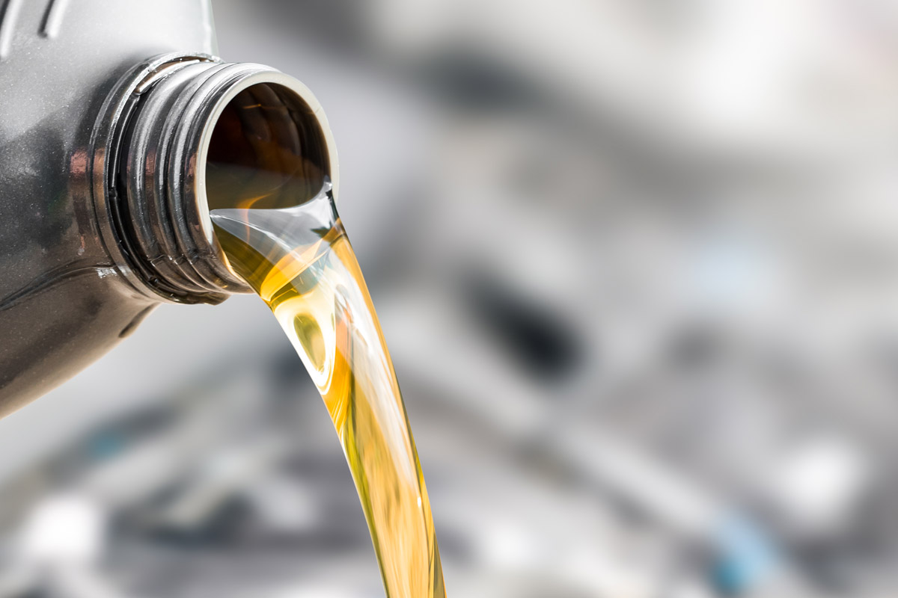

Mentenanța mașinii îți asigură nivelul maxim de confort și de siguranță de care trebuie să beneficiezi atunci când conduci. De asemenea, orice autovehicul este echipat cu tot felul de elemente menite să facă experiența condusului una cât mai ușoară. Însă, oricât de importante ar fi acestea, focusul oricărui șofer trebuie să fie mereu pe componentele de bază ale autovehicului.
Dintre toate elementele care ajută la funcționarea mașinii, uleiul de motor are nevoie de o atenție deosebită, deoarece joacă un rol extrem de important. În plus, acesta trebuie să respecte anumiți parametri de calitate pentru a nu afecta piesele pentru care acesta este folosit.
Astfel, este important să știi cum se utilizează uleiul de motor, precum și care sunt caracteristicile de care acesta trebuie să beneficieze pentru a respecta standardele de calitate corespunzătoare mașinii. În acest fel, vei gestiona uleiul de motor în mod economic și potrivit cerințelor tehnice ale autovehiculului.
Ce trebuie sa stii despre uleiul auto
Modul de administrare și gestionare a uleiului de motor reprezintă sarcini destul de simple.
Cu toate acestea, e bine să știi câteva informații de bază despre uleiul de motor, deoarece acesta trebuie să respecte o serie de standarde de calitate. În plus, nu toate mașinile acceptă același tip de ulei.
Astfel, cunoașterea uleiului de mașină este importantă pentru a gestiona corespunzător modul în care schimbi uleiul auto și cum îl alegi care se potrivește cerințelor mecanice ale mașinii tale.
De asemenea, pe lângă rolul pe care îl îndeplinește motorul, este nevoie să cunoști anumite caracteristici, cum ar fi vâscozitatea, dar și anumite informații despre uleiul sintetic, pentru a ști care este mai bun pentru mașina ta.
Toate aceste informații te ajută să administrezi uleiul potrivit mașinii și să alegi un tip de ulei care poate fi superior din punct de vedere calitativ, ceea ce poate prelungi inclusiv durata de viață a pieselor auto care folosesc uleiul de motor.
Ce face uleiul auto
Uleiul de motor reprezintă, de fapt, un amestec simplu de ulei de bază și aditivi. Acesta a fost conceput pentru a lubrifia piesele motorului, a reduce frecarea, a curăța, a răci și a proteja motorul, indiferent dacă este unul diesel sau pe benzină.
În schimb, ca urmare a noilor descoperiri ale domeniului, astăzi uleiul de motor modern face mult mai mult decât a lubrifia anumite componente ale motorului. În plus, asigură protecție la uzură, menține vâscozitatea la temperaturi variate, previne acumularea de acid și curăță și protejează componentele moderne ale motorului.
Uleiurile de bază reprezintă între 70 și 90% din totalul componenței și sunt obținute din gaze naturale sau țiței. În același timp, aditivii reprezintă între 10 și 30%. Aici sunt incluse substanțe chimice care acționează ca detergenți, antioxidanți, dar și amelioratori ai indicelui de vâscozitate.
Vascozitatea uleiului auto
Vâscozitatea este una dintre cele mai importante caracteristici ale uleiului de motor. Aceasta se referă la cât de ușor se revarsă uleiul la o anumită temperatură. Un ulei mai subțire curge mai ușor la temperaturi scăzute, ceea ce arată o vâscozitate mai mică, în timp ce uleiurile mai groase au o vâscozitate mai mare, deci curge mai greu în astfel de condiții.
La temperaturi scăzute, uleiurile subțiri reduc frecarea și ajută motoarele să pornească mai repede. La temperaturi mai ridicate, în schimb, sunt recomandate uleiurile groase care mențin presiunea uleiului și ajută la susținerea sarcinilor mai grele.
Unitatea de măsură în acest caz este indicele de vâscozitate. Acesta măsoară capacitatea uleiului de a preveni schimbări de vâscozitate în condițiile în care temperaturile fluctuează. Cele mai multe uleiuri de motor au în componența lor amelioratori ai indicelui de vâscozitate, care ajuta la menținerea vâscozității uleiului la un nivel constant la diferite temperaturi. Pentru acest lucru, se utilizează aditivi polimerici și, prin această metodă, sunt protejate și piesele motorului, împiedicând uzura prematură.
Chiar dacă uleiurile conțin astfel de amelioratori, eficiența acestora se degradează pe măsură ce uleiul se învechește. De aceea, este important să schimbi uleiul de motor în mod regulat.
Importanta uleiului auto
Având în vedere faptul că uleiul de motor are o influență mare asupra altor piese ale motorului și mentenanța lor depinde de uleiul folosit, precum și de modul în care aceste este gestionat, acest lichid este esențial pentru funcționarea sigură a autovehicului.
În același timp, este important să cunoști modurile corecte în care se administrează uleiul de motor, precum și intervalul la care acesta trebuie schimbat și care sunt simptomele unor probleme cauzate de ineficiența uleiului.
Toate aceste aspecte te ajută să prelungești durata de viață a autovehiculului și să ai parte în mod constant de siguranța și confortul de care ai nevoie atunci când conduci.
De asemenea, trebuie să înveți să deosebești un ulei de calitate de unul slab înainte de a-l administra, pentru a păstra performanțele motorului la un nivel superior. Administrarea unui ulei slab duce la uzura prematură a pieselor și la depunerea de impurități care afectează motorul în timp.
De ce trebuie schimbat uleiul auto?
Uleiul de motor asigură ungerea pieselor din motor pentru a se evita deteriorarea și pentru a menține funcționarea corespunzătoare a acestuia.
Atunci când motorul este pornit, toxinele care provin din arderea combustibilului sunt colectate în ulei. În cazul în care acestea se acumulează într-o cantitate prea mare pentru capacitatea uleiului de a le gestiona, se vor creea depozite de toxine și uzura motorului se accelerează.
De aceea, uleiul de motor trebuie schimbat pentru a preveni astfel de depozitări. În același timp, este important să te ocupi constant de mentenanța generală a mașinii și să te asiguri că folosești doar ulei de calitate.
În mod normal, uleiul de motor trebuie schimbat la fiecare 10.000-15.000 de kilometri sau o dată pe an. În schimb, acest interval poate să difere în funcție de modul în care este întreținută mașina.
Pentru a evita epuizarea uleiului de motor, mașinile moderne sunt echipate cu senzori care indică un nivel scăzut de ulei, ceea ce înseamnă că trebuie refăcută alimentarea.
Ce se intampla cand se consuma uleiul auto?
Cea mai mare problemă a epuizării uleiului o reprezintă măcinarea pieselor între ele, deoarece nu vor mai fi lubrifiate. Prin urmare, motorul se poate defecta ireparabil.
În plus, există câteva semne care indică faptul că uleiul trebuie schimbat.
Zgomotul intens care vine de la motor este unul dintre cele mai evidente semne ale faptului că nu mai ai ulei. Lubrifierea nu anulează doar frecarea directă dintre piese, ci și zgomotul pe care îl face această acțiune.
Un alt semn care nu trebuie ignorat îl reprezintă mirosul de ulei din mașină. Acesta poate fi cauzat de o scurgere.
Problemele cu uleiul pot fi semnalate și de către fumul care iese pe țeavă de eșapament. În acest caz, poate fi un semn că există o ardere necorespunzătoare în motor.
Tot la nivel vizual, se pot observa problemele uleiului în cazul în care acesta nu mai are culoarea sa naturală, similară chihlimbarului, ci are o nuanță închisă. Acest lucru arată faptul că uleiul a reținut prea multe toxine și nu mai poate proteja motorul corespunzător.
Atenția este extrem de importantă atunci când conduci, iar aceste simptome arată probleme care nu pot fi ignorate. În plus, timpul de reacție este extrem de important, deoarece orice kilometru pe care îl parcurgi fără a avea un ulei bun este extrem de dăunător pentru motorul tău.